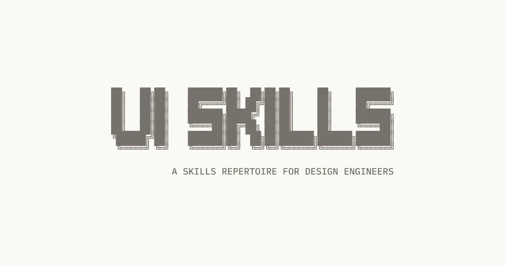

Collection
目录化，而非散装条目
首页首屏就把 skills 作为可选目录呈现，适合让 agent 按主题挑选最小上下文。
ui-skills.com 不是单一教程页，而是一个公开可浏览的技能目录：先让 agent 跑 CLI 选对技能，再按无障碍、动效、前端工艺、界面质量等主题路由到最小可用技能集。
它的重点不是“把 UI 做得更花”，而是把 UI 工作拆成可安装、可路由、可检查的技能层，让设计工程师和 agent 直接选到正确入口。
公开首页直接给出搜索、GitHub 星标、技能集合、话题分类与 `npx ui-skills start` 的使用入口。

首页首屏就把 skills 作为可选目录呈现，适合让 agent 按主题挑选最小上下文。
公开文案要求先运行 CLI，先决定用哪个 skill，再去动界面，而不是直接开改。
它同时面向人类设计工程师与 agent，所以 UI 目录本身就是工作流入口。
按 topic、stack、intent 路由到最小有用集合。
这是入口技能，先选它再选别的。
修 spacing、hierarchy、typography 和小布局问题。
偏快速 polish，不是重建系统。
ARIA、键盘、focus、contrast、form errors。
UI 质量不是只有视觉。
布局抖动、合成层、滚动联动、blur。
把动效性能单独成技，是工程化信号。
它没有把所有 UI 知识揉成一个大 prompt，而是拆成可安装、可组合、可替换的条目。
负责把问题路由到最小可用技能集。
适合快速去 slop、补齐基础秩序。
把可访问性作为第一类质量门禁。
强调 production-grade 设计和实现。
设计工程师、前端团队、AI coding tools 使用者、需要把 UI 质量拆成技能的人。
只想看一个单页教程、或不愿意按 CLI / 目录方式选技能的人。
这是“UI 能力分发层”，不是一个普通设计博客首页。
npx ui-skills start
页面提示这是开始使用的第一步。
Astro v5.16.7、@ibelick、GitHub Star、Collection、Topics、Best skills、Subscribe。
Source: https://www.ui-skills.com/ · Style: hardblue · Public site card